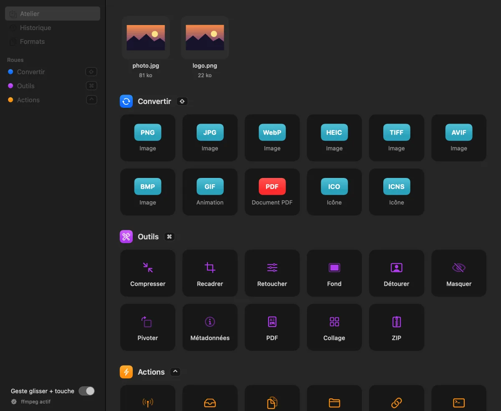

Compresser au poids voulu.
Réglez la qualité, ou visez un poids : Mue choisit le bon compromis et garde l’original.
photo.jpg3,2 Mo
photo-compressée.jpg · qualité %1,5 Mo−53 %
Mue · pour Mac
Le HEIC qu’un site refuse, la photo trop lourde pour un e-mail ? Commencez à glisser le fichier, touchez ⇧, ⌘ ou ⌃ et lâchez-le sur la roue. Le résultat apparaît à côté de l’original, sans rien envoyer en ligne.
Un fichier à convertir, à alléger, à envoyer ? Pas de site à ouvrir, pas d’app à lancer. Un glisser, une touche, un lâcher : c’est fait, sur votre Mac, sans que rien ne parte en ligne.
Le geste
Essayez : glissez un fichier et maintenez ⇧, ⌘ ou ⌃ de votre clavier, puis lâchez-le sur une option. Sans clavier, touchez un fichier puis une touche ci-dessous.
Convertir
Images, vidéos, sons, documents, tableurs, archives : Mue passe par les moteurs de macOS. Si ffmpeg, LibreOffice ou unar sont installés, d’autres formats s’ajoutent tout seuls.
Outils
Chaque outil s’ouvre dans une petite fenêtre claire. Bougez les curseurs : l’aperçu suit, comme dans l’app. L’original n’est jamais modifié.
Réglez la qualité, ou visez un poids : Mue choisit le bon compromis et garde l’original.
Réglages
Une couleur par roue, ou commune. Surbrillance unie, dégradée ou en lueur, fond sombre ou clair, trois tailles. Au-delà de 12 options, la roue passe en pages de 10 : retapez la touche.
L’atelier
La fenêtre Atelier reprend le même catalogue : déposez des fichiers, cliquez une option. L’icône de la barre des menus et le service Finder « Ouvrir dans Mue » mènent aux mêmes outils.

ImageIO, AVFoundation, PDFKit, Vision : les conversions passent par les moteurs de macOS. Aucun envoi.
Ni accessibilité ni enregistrement de l’écran : le geste lit seulement les touches et le glisser en cours.
Les conversions sont listées dans l’Atelier, sur votre Mac. L’original n’est jamais touché.
Vos fichiers changent de peau, sans quitter votre Mac.
macOS 27 ou plus récent, sur Mac Apple silicon.
 Une réalisation MTX Studio
Une réalisation MTX Studio
L’app et son site ont été dessinés et codés au studio, par la même personne.